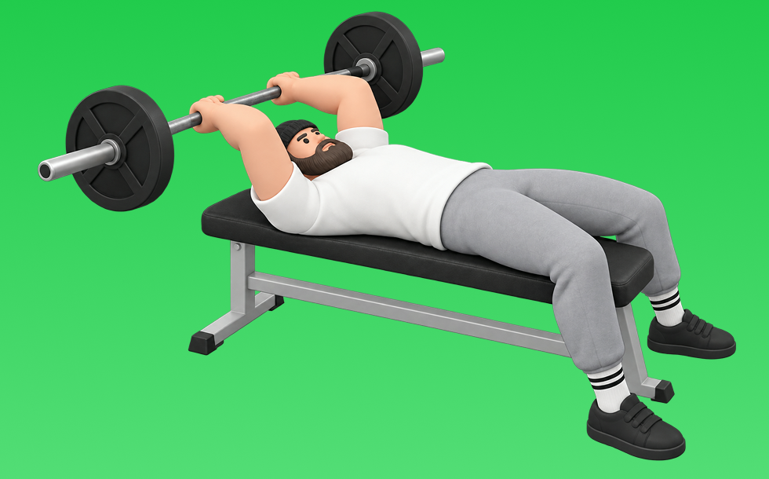

バーベルライイングトライセプスエクステンション

バーベルライイングトライセプスエクステンションとは、バーベルを使ってベンチに仰向けで「肘を伸ばす」動作で腕（上腕三頭筋）を鍛える種目です。高重量を扱いやすく、深いストレッチを得やすいのが特徴で、額の上に下ろして押し戻す動作を繰り返します。二の腕の厚みづくりやプレス系の補強が期待できます。
- 対象部位
- 腕
- 器具
- バーベル
- 記録形式
- 重量・回数
- 別名
- スカルクラッシャー / EZトライセプス / barbell skull crusher
YouTube動画
-
上腕三頭筋が最近大きくなったトライセプスエクステンションのやり方をご紹介！基本フォームや変更点を解説＆実演
-
【腕トレ】腕を太くするバーベルカール/ライイングエクステンションのやり方を解説
-
剛腕を作る最重要種目！？手のひらの○○にバーを収めよ！極意解説トライセプスエクステンション
-
【筋トレ】肘が痛みにくいライイングエクステンションのやり方！【上腕三頭筋】
-
【横川尚隆３】上腕三頭筋が一番デカくなる種目＆ポイント徹底解説です。
-
【腕トレ/三頭筋】腕を太くする、ライイングトライセプスエクステンション！初心者向け【山岸秀匡】
-
【トレ解説】腕の太さはこれで決まる！？ライイングエクステンション徹底解説！
-
トライセプスエクステンションの効果的なやり方
-
ライイングトライセプスエクステンションのやり方 - 筋トレ講座
-
上腕三頭筋のトレーニング ｜ ダンベル・トライセプスエクステンション
-
ライイングエクステンション【ジュラシックトレーニングメソッド】
-
【トライセプスエクステンション】肘を痛めず三頭筋に効かせるやり方のコツを解説
-
「トライセプス・エクステンション」のやり方教えて！！
-
肘を壊す前に見て！上腕三頭筋の種目、良くある悪いフォーム解説
-
【一撃で】上腕三頭筋をデカくする！ライイングトライセプスエクステンション徹底解説
-
【よくある5つの間違い】三頭筋強化種目 ケーブルトライセプスエクステンション篇
-
【ライイングトライセプスエクステンション】肘が痛い悩みの解決策など三頭筋長頭に効くコツを解説
-
【腕】極太の腕を作るライイングエクステンション徹底解説
-
【腕トレ】ダンベルで腕を太くする上腕三頭筋を鍛える筋トレメニュー
-
【間違えやすい筋トレ】三頭筋最強種目・スカルクラッシャー篇
-
トレーナーが教える筋トレ「ライイングトライセプスエクステンション」 【三頭筋/初級】
-
腕トレ[ﾗｲｲﾝｸﾞﾄﾗｲｾﾌﾟｽ ｴｸｽﾃﾝｼｮﾝ]三頭筋に効かせたい！！
-
【１分で解る筋トレ解説】ダンベルライイングエクステンション【筋トレライブラリー】
-
腕を短期間で大きくする方法！ライイングトライセプスエクステンションの裏技！
YouTubeショート
-
本当に正しいライイングエクステンションのやり方
-
バーベルトライセプスエクステンション（Barbell Triceps Extension）のやり方と基本フォーム
-
バーベルライイングトライセプスエクステンション（Barbell Lying Triceps Extension）のやり方とフォーム
-
横川尚隆 腕トレ(三頭筋)オーバーヘッドトライセプスエクステンション【切り抜き】#shorts
-
成長を実感したライイングエクステンションのやり方※エゴまみれ
-
腕を太くする！ライイングトライセプスエクステンション！名前長い！w #筋トレ
-
【よくある間違いスカルクラッシャー】 #筋トレ #ダイエット #新座市 #志木市 #朝霞市 #大泉学園 #東久留米 #パーソナルジム #スカルクラッシャー
-
ライイングトライセプスエクステンション
-
【ライイングエクステンション】肘を痛めない正しいフォーム解説
-
【筋トレ】ライイング・トライセップス・エクステンションのフォームのポイント #shorts 【ビーレジェンド プロテイン】
-
インクライン・ライイングトライセプス・エクステンションの正しいやり方 | ボディビル日本チャンピオンが解説 #shorts【ビーレジェンド プロテイン】
-
先生! 腕が太くなるおすすめの種目は？ ＃Shorts #助けて山本先生 ＃筋トレ大学
-
みなさんはオーバーヘッドエクステンションやってますか？持田選手がしっかり効くトレーニングをレクチャーしてくれました！#volix #腕トレ #ちょこっとおしい #上腕三頭筋 #volixgear
-
トライセプスエクステンション（バーベル使用）
-
持田選手直伝のフレンチプレス。実はフォームが大事 #トレーニング #筋トレ #volix
-
【バーベルを使ったトライセプス・エクステンションの正しい使い方】このひと押しで太ましい腕を手に入れろ！｜Training Movie 100｜Tarzan
-
【ダンベル】極太の腕を作る最強三頭筋トレーニング4選！ #shorts
-
【三頭】【スカルクラッシャー】よくある3つの間違い #パーソナルトレーナー #筋トレ #フィットネス #腕トレ
-
これ知ってる人は筋トレガチ勢💪🥺#フレンチプレス #腕トレ #筋トレ #フィットネス #ワークアウト
-
みなさんはオーバーヘッドエクステンションどのようにされてますか？？今回は持田選手がオーバーヘッドエクステンションを伝授！次はどの種目の解説をやってほしいかコメントしてね！#ちょこっと惜しい
-
極太の腕を作る！三頭筋トレ４種目！ #フィジーク #筋トレ #筋肉 #減量 #ワークアウト #筋トレ好き
-
【腕トレ！初心者🔰】上腕三頭筋を怪我なく効率的に鍛えるライイングエクステンション！
-
腕トレ／上腕三頭筋／トライセプス・エクステンション
-
トライセプスエクステンションの正しいやり方・コツ【上腕三頭筋】 #Shorts
-
かっこいい腕を作る腕トレ3選#shorts #youtubeshorts #筋トレ #腕トレ #ジム #トレーニング #筋トレ大学 #筋肉博士
-
【腕トレ解説】インクライン・オーバーヘッド・トライセプス エクステンション #筋トレ解説 #腕トレ #三頭筋
動作方法
- 肘を固定し、肩の力みを減らす
- 狙う部位で押し切る
- 可動域を保って戻す
動作ポイント
- 肘を開きすぎない
- 肩をすくめない
ワンポイントアドバイス
- 肘の位置を固定すると狙った部位に効きやすい
- 回数を急がず、下ろし動作を丁寧に行う
目的別回数設定
目的や体力に応じた一般的な目安です。無理のない範囲で調整してください。
- 筋力アップ
- 1〜5回
- 筋肥大
- 6〜12回
- 持久力アップ
- 13〜20回
YouTube動画について
動画はYouTubeの公開情報をもとに表示しています。内容は投稿者によるもので、Biggrによる監修ではありません。
アプリを入手
筋トレやトレーニングの記録はBiggrにお任せください。今すぐ無料で使い始められます。